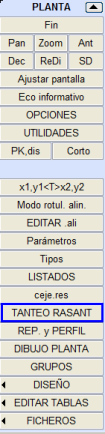
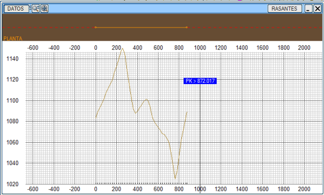

Yatay Güzergah sabit menüsünden, bu menünün sunduğu aşağıdaki özelliklerle kırmızı kot optimizasyonu yapmak için destek alabilirsiniz:
Kırmızı Kot Optimizasyonu, yatay güzergahın grafik penceresiyle eş zamanlı olarak ayrı bir pencerede gerçekleştirilebilir.

- Yatay güzergah ekseni, güzergah elemanları eklenerek veya değiştirilerek hesaplandığında, kırmızı kot penceresindeki arazi kesiti güncellenir.
- Diyalog kutusundan veya ekrana tıklayarak eksen değiştirildiğinde, kırmızı kot penceresi yeni eksenin verileriyle güncellenir.
- Bir eksenin kırmızı kot optimizasyonu için pencereye ilk kez girildiğinde, projede atanan .vol dosyasında tanımlanan kırmızı kot yüklenir.
- Bu pencerede yapılan kırmızı kot değişiklikleri, her eksen için geçici bir optimizasyon kırmızı kotuna otomatik olarak kaydedilir.
- Bir eksenden diğerine geçildiğinde, geçici kırmızı kotu geri yüklenir.
 Kırmızı Kotlar Menüsünden, bu kırmızı kot Dosyalar -> Optimizasyonu yükle'den yüklenebilir. Kırmızı Kotlar Menüsünden, bu kırmızı kot Dosyalar -> Optimizasyonu yükle'den yüklenebilir.
- Kırmızı kotlar menüsünden çıkıldığında, geçici kırmızı kot, eksenin mevcut kırmızı kotuyla güncellenir.
- Kırmızı Kotlar, Seçenekler'de, klasik moda geri dönmek için ayrı pencerede kırmızı kot optimizasyonu devre dışı bırakılabilir.
- Uzun eksenler için, eksenin başında veya ortasında herhangi bir güzergah elemanı değiştirilirse, yalnızca değiştirilen bölgedeki arazi kotları yeniden hesaplanır ve sonraki bölgede yalnızca km yeniden yapılır, bu da boykesit çıkarımını çok daha hızlı hale getirir.
Ayrıca, optimizasyon yatay güzergah içindeki kırmızı kotlar penceresinde yapılırsa, optimizasyonun geçici kırmızı kotlarının KM'leri de otomatik olarak yeniden yapılır.
|